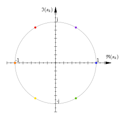
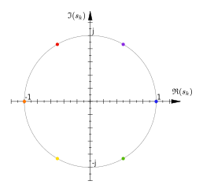

Butterworth Filters
Normalized Butterworth filters are defined in the frequency domain as follows:
$$ \begin{equation} \left|H_n(j\omega)\right| \triangleq \frac{1}{\sqrt{1+\omega^{2n}}} \end{equation} $$
 In order to determine the transfer function, we'll start from the frequency response squared.
We'll assume that the transfer function \(H_n(s)\) is a rational function with real coefficients.
Therefore, \(\overline{H_n(s)} = H_n\left(\overline{s}\right)\).
$$ \begin{split}
\left|H_n(j\omega)\right|^2 \;=\; & H_n(j\omega) \overline{H_n(j\omega)} \\
\;=\; & H_n(j\omega) H_n(\overline{j\omega}) \\
\;=\; & H_n(j\omega) H_n(-j\omega) \\
\;=\; & \frac{1}{1+\omega^{2n}}
\end{split} $$
We're looking for the transfer function \(H_n(s)\), so we'll use the identity \(s = j\omega \Leftrightarrow \omega
= \frac{s}{j}\).
$$ H_n(s) H_n(-s) = \frac{1}{1 + \left(\frac{s}{j}\right)^{2n}} $$
The poles of this transfer function are given by:
$$ \begin{split}
& \left(\frac{s}{j}\right)^{2n} = -1 \\
\Leftrightarrow \quad & s^{2n} = -1 \left(j\right)^{2n} \\
\Leftrightarrow \quad & s^{2n} = -1 \left(-1\right)^n \\
\Leftrightarrow \quad & s^{2n} = \left(-1\right)^{n+1} \\
\Leftrightarrow \quad & s^{2n} = e^{j\pi(n+1)}
\end{split} $$
Keep in mind that this is a polynomial of order \(2n\), so it has \(2n\) complex roots.
$$ s_k = e^{j2\pi\frac{2k + n + 1}{4n}} \quad k \in \{0, 1, \dots 2n - 1\} $$
For example, for \(n = 3\), the poles are:
$$ \begin{split}
s_0 \;=\; & e^{j2\pi\frac{0 + 3 + 1}{12}} \;=\; e^{j2\pi\frac{2}{6}} \\
s_1 \;=\; & e^{j2\pi\frac{2 + 3 + 1}{12}} \;=\; e^{j2\pi\frac{3}{6}} \\
s_2 \;=\; & e^{j2\pi\frac{4 + 3 + 1}{12}} \;=\; e^{j2\pi\frac{4}{6}} \\
s_3 \;=\; & e^{j2\pi\frac{6 + 3 + 1}{12}} \;=\; e^{j2\pi\frac{5}{6}} \\
s_4 \;=\; & e^{j2\pi\frac{8 + 3 + 1}{12}} \;=\; e^{j2\pi\frac{6}{6}} \\
s_5 \;=\; & e^{j2\pi\frac{10 + 3 + 1}{12}} \;=\; e^{j2\pi\frac{1}{6}}
\end{split} $$
These are all points on the unit circle, \(\pi/3 = 60°\) apart.

The poles are stable if they are in the left half plane, if their complex argument is between 90° and 270°:
$$ \begin{split}
& 2\pi\frac{2k + n + 1}{4n} \in \left(\frac{\pi}{2}, \frac{3\pi}{2}\right) \\
\Leftrightarrow \quad & 2k + n + 1 \in \left(n, 3n\right) \\
\Leftrightarrow \quad & k \in \left(-\frac{1}{2}, n-\frac{1}{2}\right) \\
\Rightarrow \quad & k \in \left(-\frac{1}{2}, n-\frac{1}{2}\right) \cup \{0, 1, \dots 2n - 1\} \\
\Leftrightarrow \quad & k \in \{0, 1, \dots n - 1\}
\end{split} $$
$$ \begin{equation} s_{k, stable} = e^{j2\pi\frac{2k + n + 1}{4n}} \quad k \in \{0, 1, \dots n - 1\} \end{equation}
$$
We want our filter \(H_n(s)\) to be stable, so we pick the poles in the left half plane to be the poles of
\(H_n(s)\).
The unstable poles, for \(k \in \{n, n+1, \dots 2n - 1\}\) are the poles of \(H_n(-s)\). They are the opposites of
the poles of \(H_n(s)\):
$$ \begin{split}
s_{k, unstable} \;=\; & e^{j2\pi\frac{2k + n + 1}{4n}} \quad k \in \{n, n+1, \dots 2n - 1\} \\
& l \triangleq k-n \\
\;=\; & e^{j2\pi\frac{2(l+n) + n + 1}{4n}} \quad l \in \{0, 1, \dots n - 1\} \\
\;=\; & e^{j\left(2\pi\frac{2l + n + 1}{4n}+\pi\right)} \quad l \in \{0, 1, \dots n - 1\} \\
\;=\; & e^{j\pi}\cdot e^{j2\pi\frac{2l + n + 1}{4n}} \quad l \in \{0, 1, \dots n - 1\} \\
\;=\; & -1\cdot e^{j2\pi\frac{2l + n + 1}{4n}} \quad l \in \{0, 1, \dots n - 1\} \\
\;=\; & -s_{l, stable} \quad l \in \{0, 1, \dots n - 1\}
\end{split} $$
In order to determine the transfer function, we'll start from the frequency response squared.
We'll assume that the transfer function \(H_n(s)\) is a rational function with real coefficients.
Therefore, \(\overline{H_n(s)} = H_n\left(\overline{s}\right)\).
$$ \begin{split}
\left|H_n(j\omega)\right|^2 \;=\; & H_n(j\omega) \overline{H_n(j\omega)} \\
\;=\; & H_n(j\omega) H_n(\overline{j\omega}) \\
\;=\; & H_n(j\omega) H_n(-j\omega) \\
\;=\; & \frac{1}{1+\omega^{2n}}
\end{split} $$
We're looking for the transfer function \(H_n(s)\), so we'll use the identity \(s = j\omega \Leftrightarrow \omega
= \frac{s}{j}\).
$$ H_n(s) H_n(-s) = \frac{1}{1 + \left(\frac{s}{j}\right)^{2n}} $$
The poles of this transfer function are given by:
$$ \begin{split}
& \left(\frac{s}{j}\right)^{2n} = -1 \\
\Leftrightarrow \quad & s^{2n} = -1 \left(j\right)^{2n} \\
\Leftrightarrow \quad & s^{2n} = -1 \left(-1\right)^n \\
\Leftrightarrow \quad & s^{2n} = \left(-1\right)^{n+1} \\
\Leftrightarrow \quad & s^{2n} = e^{j\pi(n+1)}
\end{split} $$
Keep in mind that this is a polynomial of order \(2n\), so it has \(2n\) complex roots.
$$ s_k = e^{j2\pi\frac{2k + n + 1}{4n}} \quad k \in \{0, 1, \dots 2n - 1\} $$
For example, for \(n = 3\), the poles are:
$$ \begin{split}
s_0 \;=\; & e^{j2\pi\frac{0 + 3 + 1}{12}} \;=\; e^{j2\pi\frac{2}{6}} \\
s_1 \;=\; & e^{j2\pi\frac{2 + 3 + 1}{12}} \;=\; e^{j2\pi\frac{3}{6}} \\
s_2 \;=\; & e^{j2\pi\frac{4 + 3 + 1}{12}} \;=\; e^{j2\pi\frac{4}{6}} \\
s_3 \;=\; & e^{j2\pi\frac{6 + 3 + 1}{12}} \;=\; e^{j2\pi\frac{5}{6}} \\
s_4 \;=\; & e^{j2\pi\frac{8 + 3 + 1}{12}} \;=\; e^{j2\pi\frac{6}{6}} \\
s_5 \;=\; & e^{j2\pi\frac{10 + 3 + 1}{12}} \;=\; e^{j2\pi\frac{1}{6}}
\end{split} $$
These are all points on the unit circle, \(\pi/3 = 60°\) apart.

The poles are stable if they are in the left half plane, if their complex argument is between 90° and 270°:
$$ \begin{split}
& 2\pi\frac{2k + n + 1}{4n} \in \left(\frac{\pi}{2}, \frac{3\pi}{2}\right) \\
\Leftrightarrow \quad & 2k + n + 1 \in \left(n, 3n\right) \\
\Leftrightarrow \quad & k \in \left(-\frac{1}{2}, n-\frac{1}{2}\right) \\
\Rightarrow \quad & k \in \left(-\frac{1}{2}, n-\frac{1}{2}\right) \cup \{0, 1, \dots 2n - 1\} \\
\Leftrightarrow \quad & k \in \{0, 1, \dots n - 1\}
\end{split} $$
$$ \begin{equation} s_{k, stable} = e^{j2\pi\frac{2k + n + 1}{4n}} \quad k \in \{0, 1, \dots n - 1\} \end{equation}
$$
We want our filter \(H_n(s)\) to be stable, so we pick the poles in the left half plane to be the poles of
\(H_n(s)\).
The unstable poles, for \(k \in \{n, n+1, \dots 2n - 1\}\) are the poles of \(H_n(-s)\). They are the opposites of
the poles of \(H_n(s)\):
$$ \begin{split}
s_{k, unstable} \;=\; & e^{j2\pi\frac{2k + n + 1}{4n}} \quad k \in \{n, n+1, \dots 2n - 1\} \\
& l \triangleq k-n \\
\;=\; & e^{j2\pi\frac{2(l+n) + n + 1}{4n}} \quad l \in \{0, 1, \dots n - 1\} \\
\;=\; & e^{j\left(2\pi\frac{2l + n + 1}{4n}+\pi\right)} \quad l \in \{0, 1, \dots n - 1\} \\
\;=\; & e^{j\pi}\cdot e^{j2\pi\frac{2l + n + 1}{4n}} \quad l \in \{0, 1, \dots n - 1\} \\
\;=\; & -1\cdot e^{j2\pi\frac{2l + n + 1}{4n}} \quad l \in \{0, 1, \dots n - 1\} \\
\;=\; & -s_{l, stable} \quad l \in \{0, 1, \dots n - 1\}
\end{split} $$
We'll define the normalized Butterworth polynomial as follows:
$$ \begin{equation} B_n(s) \triangleq \prod_{k=0}^{n-1}\left(s-e^{j2\pi\frac{2k + n + 1}{4n}}\right) \end{equation}
$$
Using the identity, \(e^{j\theta} + e^{-j\theta} = 2\cos\theta\), we can further simplify the result:
Even order \(n\):
$$ \begin{split}
B_n(s) \;=\; & \prod_{k=0}^{n-1}\left(s-e^{j2\pi\frac{2k + n + 1}{4n}}\right) \\
\;=\; & \prod_{k=0}^{\frac{n}{2}-1}\left(s-e^{j2\pi\frac{2k + n + 1}{4n}}\right)
\prod_{l=\frac{n}{2}}^{n-1}\left(s-e^{j2\pi\frac{2l + n + 1}{4n}}\right) \\
& l = n - k - 1 \\
\;=\; & \prod_{k=0}^{\frac{n}{2}-1}\left(s-e^{j2\pi\frac{2k + n + 1}{4n}}\right)
\left(s-e^{j2\pi\frac{2\left(n - k - 1\right) + n + 1}{4n}}\right) \\
\;=\; & \prod_{k=0}^{\frac{n}{2}-1}\left(s-e^{j2\pi\frac{2k + n + 1}{4n}}\right)
\left(s-\frac{e^{j2\pi\frac{-2k + 3n - 1}{4n}}}{1}\right) \\
\;=\; & \prod_{k=0}^{\frac{n}{2}-1}\left(s-e^{j2\pi\frac{2k + n + 1}{4n}}\right)
\left(s-\frac{e^{j2\pi\frac{-2k + 3n - 1}{4n}}}{e^{j2\pi}}\right) \\
\;=\; & \prod_{k=0}^{\frac{n}{2}-1}\left(s-e^{j2\pi\frac{2k + n + 1}{4n}}\right)
\left(s-e^{j2\pi\left(\frac{-2k + 3n - 1}{4n} - 1 \right)}\right) \\
\;=\; & \prod_{k=0}^{\frac{n}{2}-1}\left(s-e^{j2\pi\frac{2k + n + 1}{4n}}\right)
\left(s-e^{j2\pi\frac{-2k + 3n - 4n - 1}{4n}}\right) \\
\;=\; & \prod_{k=0}^{\frac{n}{2}-1}\left(s-e^{j2\pi\frac{2k + n + 1}{4n}}\right)
\left(s-e^{j2\pi\frac{-2k - n - 1}{4n}}\right) \\
\;=\; & \prod_{k=0}^{\frac{n}{2}-1}\left(s-e^{j2\pi\frac{2k + n + 1}{4n}}\right)
\left(s-e^{-j2\pi\frac{2k + n + 1}{4n}}\right) \\
\;=\; & \prod_{k=0}^{\frac{n}{2}-1}\left(s^2 - s e^{j2\pi\frac{2k + n + 1}{4n}} - s e^{-j2\pi\frac{2k + n +
1}{4n}}
+ 1\right) \\
\;=\; & \prod_{k=0}^{\frac{n}{2}-1}\left(s^2 - 2 \cos\left(2\pi\frac{2k + n + 1}{4n}\right) s + 1\right) \\
\end{split} $$
Odd order \(n\):
In this case, \(n-1\) is even, and you get a special pole for \(k = \frac{n-1}{2}\):
$$ \begin{split}
s_{\frac{n-1}{2}} \;=\; & e^{j2\pi\frac{2\frac{n-1}{2} + n + 1}{4n}} \\
\;=\; & e^{j2\pi\frac{2n}{4n}} \\
\;=\; & e^{j\pi} \\
\;=\; & -1
\end{split} $$
After isolating this pole, we're left with an even number of complex conjugate poles, just like in the case where
\(n\) was even.
In conclusion, the normalized Butterworth polynomial of degree \(n\) is given by:
$$ \begin{equation}
B_n(s) \;=\;
\begin{cases}
\prod_{k=0}^{\frac{n}{2}-1}\left(s^2 - 2 \cos\left(2\pi\frac{2k + n + 1}{4n}\right) s + 1\right) &
\textrm{even}\ n \\
(s + 1) \prod_{k=0}^{\frac{n-1}{2}-1}\left(s^2 - 2 \cos\left(2\pi\frac{2k + n + 1}{4n}\right) s + 1\right) &
\textrm{odd}\ n
\end{cases}
\end{equation} $$
The transfer function \(H_n(s)\) has no zeros, so the numerator is a constant. The poles of \(H_n(s)\) are given by
Equation \((2)\), so
the denominator is given by Equation \((3)\).
$$ H_n(s) = \frac{c}{B_n(s)} $$
We wanted a DC gain of \(1\) \(\left(= 0 dB\right)\) for \(\omega = 0\):
$$ \begin{split}
& \left|H_n(0j)\right| \;=\; 1 \\
\Leftrightarrow \quad & \left|\frac{c}{B_n(0)}\right| \;=\; 1 \\
\Leftrightarrow \quad & \left|\frac{c}{\prod_{k=0}^{n-1}\left(0-e^{j2\pi\frac{2k + n + 1}{4n}}\right)}\right|
\;=\; 1 \\
\Leftrightarrow \quad & \frac{\left|c\right|}{\prod_{k=0}^{n-1}\left|-e^{j2\pi\frac{2k + n + 1}{4n}}\right|}
\;=\; 1 \\
\Leftrightarrow \quad & \frac{\left|c\right|}{1} \;=\; 1
\end{split} $$
If we want no phase offset for low frequencies, we can postulate that \(\angle H_n(0j) = 0\):
$$ \begin{split}
& \angle H_n(0j) \;=\; 0 \\
\Leftrightarrow \quad & \angle\left(\frac{c}{B_n(0)}\right) \;=\; 0 \\
\Leftrightarrow \quad & \angle c - \angle\left(\prod_{k=0}^{\frac{n}{2}-1}\left(0^2 - 2 \cos\left(2\pi\frac{2k
+ n + 1}{4n}\right) \cdot 0 + 1\right)\right) \;=\; 0 \\
\Leftrightarrow \quad & \angle c - \angle 1 \;=\; 0
\end{split} $$
The derivation is analogous for odd \(n\).
Therefore, \(c = 1\), and we've eliminated all unknown parameters from the transfer function:
$$ \begin{equation} H_n(s) = \frac{1}{B_n(s)} \end{equation} $$